Diseño Gráfico
Objetivos
- Formar Diseñadores Gráficos con un perfil flexible y calificado para abordar las necesidades de comunicación de la sociedad y las empresas en el mundo actual.
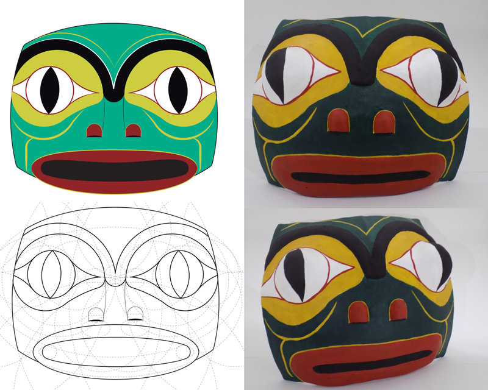- Procurar las herramientas necesarias para que los graduados logren desarrollar su propia iniciativa en el trabajo individual, la capacidad de organización y el espíritu de trabajo en equipo, indispensables para la inserción en el mundo laboral.
- Generar un equilibrio armónico entre la formación conceptual y la capacitación práctica para la correcta implementación de sus saberes.
- Establecer una sólida estructura curricular en las áreas de Teoría del Diseño, Tipografía, Comunicación y Técnica, y sistemas multimediales adecuados a la profesión del Diseñador.
- Propiciar actitudes de actualización permanente en los avances de su profesión.
Qué se estudia
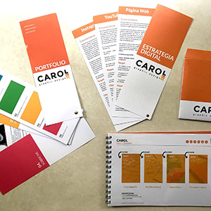- Técnicas Estéticas y Expresivas. Lenguajes y Software: Adobe Photoshop. Illustrator. InDesign. Premiere. After Effects. 3D Studio Max. HTML5. CSS3.
- Sistema de identidad: Marcas. Isotipos y logotipos para empresas e instituciones. Submarcas. Sistemas de Identidad Visual.
- Diseño Editorial: maquetación, diseño y diagramación editorial, aplicación de grillas, ritmos de lectura por niveles de lectura, paquetes de información. Libros, diarios, revistas, artículos, folletos. Editorial formato impreso y formato digital.
- Diseño Persuasivo: Comunicación Visual. Campañas Publicitarias. Avisos para medios gráficos. Diarios. Revistas. Vía Pública.
- Diseño de interfaces digitales Digitales: Interfaces gráficas y visuales, en el entorno virtual y escenarios multimediales, producción de contenidos, diseño de aplicaciones móviles (APP), diseño web, diseño de experiencia de usuario (UX), redes sociales, motion graphic, stop motion, banners, flyers, branding de TV, branding de marca, animación.
- Diseño 3D: plataforma de modelado 3D Studio.
- Diseño Multimedial: Ambito web, eCommerce, video tutorial, multiplataforma, experiencia de usuario.
- Tecnologia audiovisual, Diseño aplicado a Redes.
- Comunicación Digital e Interactiva, Desarrollo de Aplicaciones Web, Redacción para la Web, Usabilidad y Experiencia de Usuario, Análisis y Gestión de Redes Sociales, Gestión y Producción de Contenidos Multimediales, Diseño Interactivo, Introducción a la Programación Aspectos Económicos y Jurídicos de la Web, Técnicas de Posicionamiento y Métricas Web.
Perfil del Egresado
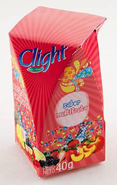El licenciado en Diseño Gráfico, una vez egresado, es un profesional capaz de idear, generar, analizar, proponer, evaluar y diseñar la expresión de la comunicación visual a través de medios visuales, gráficos y multimediales en general, con capacidades para desenvolverse en todo tipo de organizaciones públicas y privadas.
- La carrera de Diseño gráfico en USAL posibilita entrar al campo laboral con una formación completa en todas las áreas profesionales del diseño, habiendo incorporado el uso de las herramientas tecnológicas mas modernas, con un gran desarrollo en la precepción del diseño y la capacidad para comunicar, preparados para desarrollar capacidades proyectuales de innovación y reflexión, en todas las áreas de la comunicación visual y multimedial.

- La licenciatura en Diseño Gráfico forma diseñadores con perfil multidisciplinario, capaces de concebir y dirigir proyectos de diseño (gráfica, objetos, medios digitales) en empresas e instituciones.
- La formación proyectual y técnica le permitirá al graduado eficiencia como profesional del Diseño en relación a objetos, mensajes, información, medios digitales, etc.>
- Aplicar conocimientos de distintas áreas técnicas y creativas combinando diseño gráfico, ilustración, lettering, fotografía, animación, desarrollo web, y diseño de aplicaciones interactivas. Diseño 3D. Realidad Aumentada
- Analizar, experimentar y obtener un manejo eficaz de las tecnologías involucradas en la producción de obras digitales, aprendiendo dentro de contexto de experimentación e intercambio junto a los mejores profesores del tema, permitiéndole tener sólidos conocimientos del lenguaje gráfico, respondiendo a la últimas tendencias y vanguardias de la comunicación visual.
- Formación para la investigación en los campos de conocimiento involucrados en las artes gráficas.
Alcances del título en Licenciado en Diseño Gráfico
- Identidad Corporativa
- Diseño Editorial: Diarios, revistas, libros, balances de sumas y saldos, brochures, catálogos, almanaques.
- Diseño, desarrollo e implementación de campañas persuasivas, promocionales y publicitarias.
- Diseño de envases y etiquetas
- Infografías: Diseño de la Información
- Diseño de Signos y Señalética
- Diseño de Stand
Ámbito Laboral
Los diseñadores gráficos egresados de la USAL trabajan en muy diversos espacios:
- Estudios de diseño de comunicación visual gráfico y digital.
- Agencias de publicidad.
- Editoriales.
- Departamento de comunicación de cualquier empresa.
- Como diseñador independiente, emprender proyectos propios de productos y servicios.
- Empresas dedicadas al diseño web, APP y sistemas multimediales.
- Editoriales digitales; empresas de tecnología y espectáculos; periódicos y noticieros; organismos gubernamentales.
Plan de estudios
CICLO DE FORMACIÓN BÁSICA
PRIMER AÑO – Resolución Rectoral Nº 309/12 Bis
Contenidos mínimos de las asignaturas:
Taller de Diseño Gráfico I
El ojo y la mirada. La búsqueda de lo visual. La doble realidad de las imágenes. La percepción de las formas. Síntesis. Pictograma. Figuras Retóricas. Significado y significante. Denotación y connotación. Figuras Sintácticas, semánticas.Tipogramas.
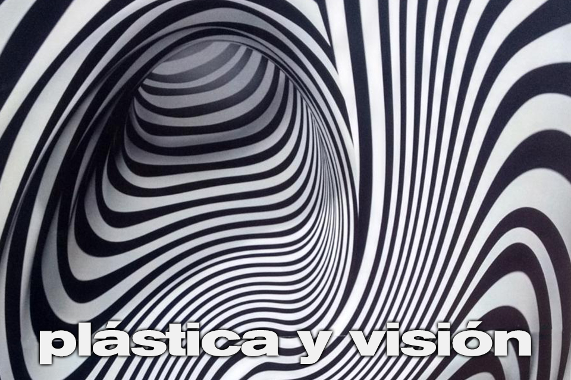Plástica y Visión I
Fundamentos visuales. Forma y color. Círculo cromático tradicional y círculo cromático generativo. Paletas de colores armónicos. Intervalos de colores análogos, adyacentes, tríadas, complementarios. Temperatura del color, gamas frías, cálidas y quebradas. Estructura. Profundidad y altura en el plano. Ritmo y recorrido. Unidades compositivas: textura, trama y retícula. Manejo de escala, espacio, y ritmo. Estudio de la reversibilidad y los espacios ambiguos en la relación figura - fondo. La forma. Definiciones: lo interno y lo externo. Leyes de la percepción visual. Representación, abstracción y simbolismo. Las sensaciones visuales.
Tecnología Digital I
Sistema Windows y Mac diferencias y similitudes. Introducción a Photoshop. Introducción a illustrator. Área de trabajo, paneles, herramientas, configuración y uso de accesos rápidos. Integración entre Illustrator y Photoshop. Exportación web.
Historia del arte y del diseño I
Arte primitivo / prehistórico. Origen e historia del alfabeto. Introducción a la historia del arte y del diseño. Rito, mito y magia. Los primeros símbolos: origen y motivación. Roma y su imperio, imperio bizantino y el arte paleocristiano. El sistema feudal, transformaciones en la estructura social, desarrollo comercial y urbano. El sentimiento religioso. Monasterios y bibliotecas eclesiásticas. El manuscrito medieval. Humanismo. Nuevas concepciones del espacio y el tiempo. Cambios en los modos de representación. Innovaciones artísticas. Experiencia visual y sociedad en el Quattrocento. El libro. Gutenberg y sus tipos móviles. La xilografía. Los primeros tipógrafos y editores. Cultura popular y cultura masiva. Francia: barroco y clasicismo. El tiempo objetivado y la historicidad. Rococó y decadencia del mundo cortesano. El neoclasicismo. Revolución francesa. Alianza arte-ciencia-industria. Cultura impresa. Nuevas modalidades de producción. Revolución industrial, ciencia e industria. Romanticismo histórico. El realismo y la nueva temática social. La caricatura y medios de difusión masiva. Daumier, Doré y Blake. Impresionismo: la pintura de lo instantáneo. Arts&Crafts y post impresionismo.
Lenguaje y Comunicación Visual I
Reconocer los elementos organizadores del lenguaje visual en sus aspectos sintácticos considerando las variables espaciales y contextuales y dimensión comunicacional de la publicidad y el diseño. Integrar la imaginación, las sensaciones, emociones, pensamientos e ideas como componentes fundamentales de las producciones visuales en productos diseñados. Estructura de los mensajes visuales. Factores de composición ocultos. Peso compositivo. Síntesis compositiva. Los mensajes visuales. Factores de composición ocultos. Reconocimiento de diferentes estructuras organizativas de los elementos visuales. Información y persuasión. El signo. La percepción como acto cognitivo. El proceso de semiosis. La retórica de la imagen.
Filosofía
Antropología filosófica. Definición de filosofía como ciencia que estudia la realidad a la luz de las primeras y últimas causas. La realidad, lo que es o el ser como objeto de la filosofía. Diferencia y relación con el conocimiento científico-causal. El hombre como unidad alma-cuerpo. Dimensión física y neurovegetativa. Dimensión sensible o animal del hombre. Conocimiento sensible o sentidos externos e internos. Afectividad sensible. Trascendencia del hombre por su inteligencia: capacidad abstractiva. Distinción de imagen y concepto. Trascendencia del hombre por su inteligencia: capacidad iudicativa. Distinción entre juicio verdadero y falso. Trascendencia del hombre por su inteligencia: capacidad discursiva. El razonamiento y los principios de la lógica como fundamento del conocimiento vulgar y científico. El razonamiento falso o sofisma. La afectividad espiritual o voluntad libre. Relación y distinción con las emociones sensibles. La inclinación y búsqueda del bien. Inclinación al bien, amor al bien, transformación en el bien. La persona humana como substancia individual de naturaleza espiritual. Unidad de esencia o naturaleza y diversidad de individuos. La referencia de todas las ciencias al bien de la persona humana. En toda ciencia subyace la noción de persona humana. Persona y sociedad. El bien común como fin de la sociedad. La persona humana como centro de la sociedad. La autoridad como promotora del bien común. Los extremos del modelo individualista y colectivista.
Inglés Técnico
Términos en idioma inglés de temas específicos relacionados con la carrera. Tiempos verbales. Preposiciones. Elementos esenciales de comunicación como escribir cartas (postulaciones de trabajo, CVs, faxes, e-mails, solicitar información, organizar reuniones), llamadas telefónicas, brindar sugerencias y realizar pedidos/ofrecimientos y presentaciones de información.
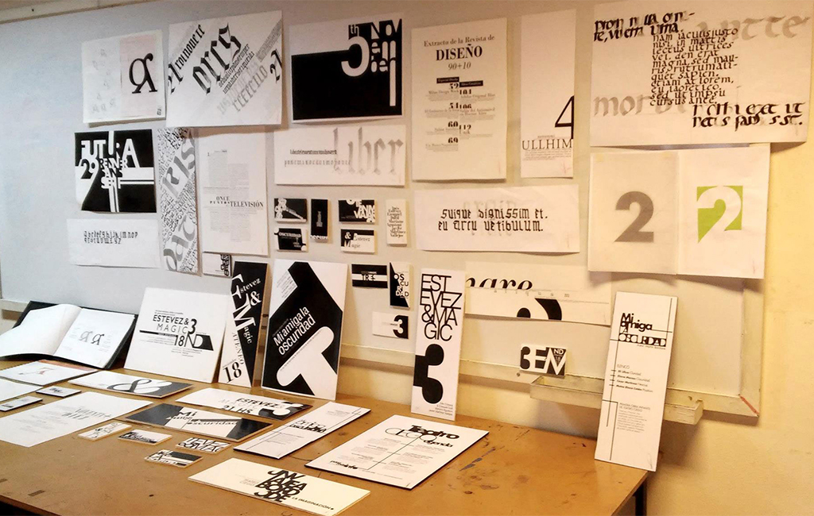Producción Gráfica
Sistema Base de Impresión en Relieve. Aporte de fotografía. La flexografía. El fotopolímero. El huecograbado. El offset, y el offset digital. Sistemas híbridos de impresión. La serigrafía. Sistemas alternativos de impresión: tampografía, timbrado, grabado en acero, hot stamping, calcografía. El original de arte. Cruces de registro. Líneas de corte. Formatos: PDF, EPS, TIFF, JPEG. Lenguaje PostScript. Curvas. Fuera de registro.
Tipografía I
Signo tipográfico en su multidimensionalidad: como signo, como símbolo y como elemento sistémico. Utilización de la tipografía en la práctica del diseño. Elementos básicos de configuración del signo tipográfico (forma/ contraforma, estructura, cuerpo, clasificación tipológica, variables, etc.) Y de articulación entre signos (interletra, interpalabra, párrafo, etc.). El concepto tipológico de “fuente tipográfica”. El manejo del espacio tipográfico. Niveles de lectura y exploración elemental de la puesta en página a través de la óptica tipográfica.
SEGUNDO AÑO
Total Horas Ciclo de Formación Básica: 1386
Contenidos mínimos de las asignaturas:
Taller de Diseño Gráfico II
Diseño de Persuasión. Publicidad. Funciones. Atributos. Teoría de la Imagen. Retórica Visual. Estructura de la Información: ideas básicas sobre el pensamiento sistémico de los significados, significantes objetivos y destinatarios. La secuencia. El plan ordenador. Sistema y subsistema. Articulación de elementos gráficos, tipográficos, fotográficos en un plan visual. El diseño tridimensional. Sistema de identificación visual. Códigos normativos. Regímenes de lectura, escala, etc. Estilos comunicativos. Estilos gráficos. Lenguajes gráficos.
Plástica y Visión II
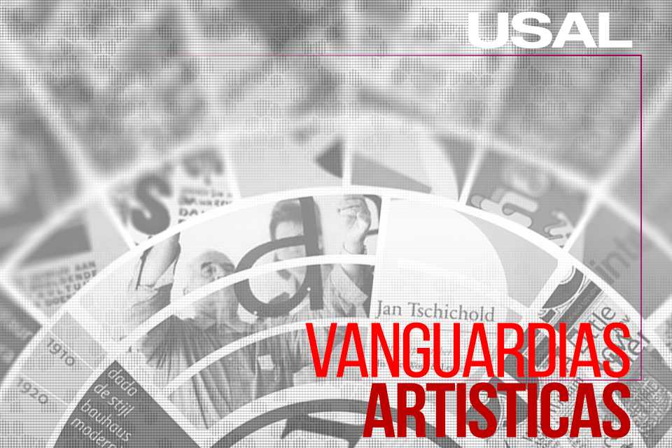Técnicas graficas. Manejo eficiente de los atributos de la forma para la construcción de relatos visuales. Composición compleja del espacio gráfico bidimensional. Leyes gestálticas. Propuestas cromáticas utilizando claves lumínicas y cromáticas diversas que permitan verificar la posibilidad de estructuración y significado por medio de color. Síntesis | Lenguaje | Signo: síntesis formal y utilización de lenguaje. La buena forma. Organización del campo gráfico - secuencia fotográfica y composición compresión de la estructura de la imagen. Articulación texto imagen. Concepto de serie.
Tecnología Digital II
Adobe Indesing - conceptos básicos. Características principales. Rotación de páginas y pliegos sustitución de elementos en plantillas. Párrafos y áreas de texto. Anidación, agrupación y bloqueo de objetos. HTML.
Historia del Arte y del Diseño II
Vanguardias del siglo xx: Fauvismo/Cubismo. Expresionismo/futurismo. Dadaísmo/surrealismo. Constructivismo Ruso/Suprematismo/De Stijl. Bauhaus. Modernismo pictórico. Guerras y posguerras. Diseño en estados unidos. La escuela de NY. El pop. Escuela de ULM. El estilo internacional. Imagen conceptual. Posmodernidad: crisis de las premisas de la modernidad. Fragmentación y eclecticismo. Revival. Cita y parodia. Intertextualidad. Deconstrucción. Cuestionamiento de las normas. Diseño digital. Preocupaciones actuales. Tendencias. El Instituto Torcuato Di Tella y su departamento de diseño gráfico. New Wave 80s y Deconstrucción 90s. El diseño contemporáneo.
Introducción al Marketing
Introducción a la estadística aplicada, investigación de mercado, canales de distribución, comportamiento del consumidor, publicidad, planeamiento estratégico de negocios, marketing de pymes de diseño. Análisis de productos. Desarrollo profesional. Creatividad e innovación. Negocios de diseño (tendencias y mercados). Administración. Técnicas de investigación relaciones públicas (diseño y empresa). Gestión empresarial.
Teología
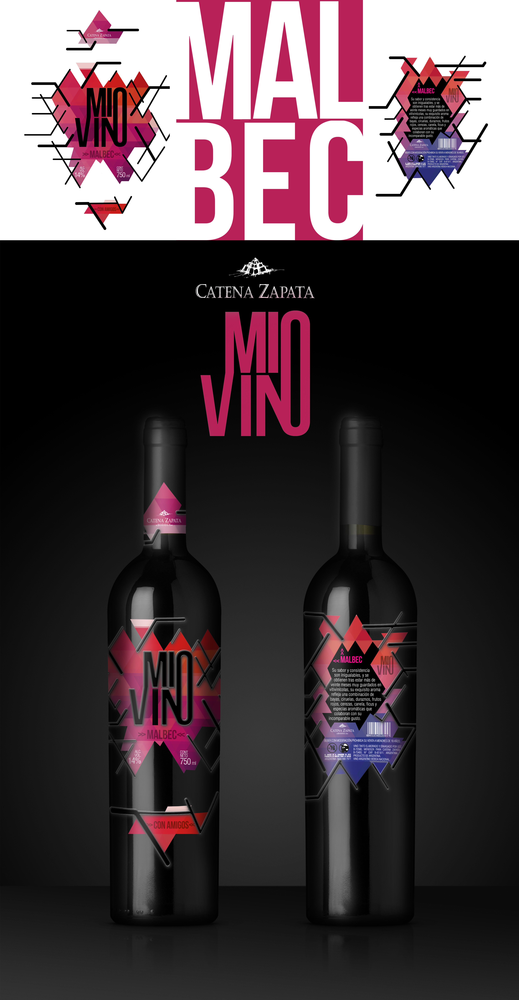Antropología teológica. Teología como ciencia que estudia a dios y las demás realidades a la luz de la razón ilustrada por la revelación. Distinción entre revelación y fe. Distinción entre revelación formal y revelación virtual (teología). Conocimiento racional de dios a partir de la causalidad y la analogía. Dios se revela a sí mismo: unidad de naturaleza y trinidad de personas. La creación del mundo espiritual, el mundo material y el hombre. La caída original. Ruptura del hombre con Dios, con los demás y consigo mismo. Secuelas de ignorancia, malicia y concupiscencia. La persona de cristo y el misterio de la encarnación: Verdadero Dios y Verdadero Hombre nacido de María. Cristo por su pasión, muerte y resurrección borró nuestros pecados, nos devolvió la gracia de dios y nos hace herederos de la vida eterna. El seguimiento de cristo como muerte al pecado y resurrección a la vida divina. La unión con dios por la fe, la esperanza y la caridad. La santificación o participación objetiva de la gracia de cristo por los siete sacramentos. El sacramento de la reconciliación. El sacramento de la eucaristía. Sacrificio, presencia y comunión. Sentido y el lugar que ocupa la oración en la vida cristiana. La lectura espiritual. La meditación. La contemplación. La iglesia peregrina, purificante y el reino de dios.
Metodología de la investigación aplicada al diseño
Relaciones entre diseño y ciencia. El diseño como disciplina. Acercamiento al análisis de procesos de diseño. Características fundamentales y casos ejemplares. El diseño como configurador del mundo artificial. Artefactos de interés para la acción del diseño. El giro semántico de Klaus Krippendorff. Métodos para crear espacios de futuros posibles: brainstorming, reframing, combinatoria.
Tipografía II
Composición y jerarquización tipográfica. Uso de misceláneas y caracteres no alfabéticos. Contraste y ritmo tipográfico. Constantes y variables. Estructura del texto. Uso de retícula de diagramación. Cálculo tipográfico. Proporción. Diseño y puesta en página.
Diseño Multimedial I (Animación y APP)
El diseño multimedial desde el diseño de información e interacción. La interfaz como utensilio en el diseño para los hipermedios. Interfaces gráficas y metáforas. Adobe Dreamweaver. Arquitectura de la información. Prototipos web de baja, intermedia y alta fidelidad. Usabilidad, prestaciones, coherencia, convenciones y limitaciones culturales. Jerarquías y modos de lectura. Resoluciones de pantalla.
CICLO DE FORMACIÓN SUPERIOR
TERCER AÑO
Total Horas: 2016
TÍTULO INTERMEDIO: DISEÑADOR GRÁFICO
Contenidos mínimos de las asignaturas:
Taller de Diseño Gráfico III
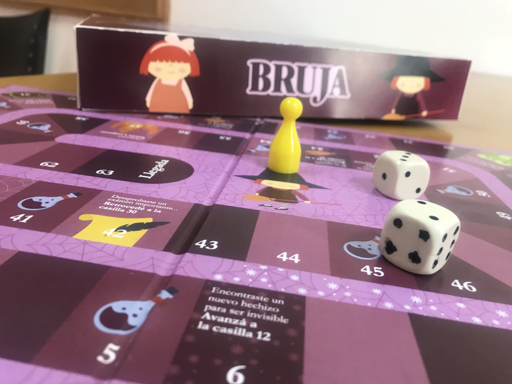El pictograma. La imagen objetiva y figurativa. Las formas humanas. Los sistemas de signos. Marca y Submarcas. Sistemas y subsistemas de alta complejidad. Las necesidades del conjunto de marcas Identidad Corporativa. Realidad institucional. Identidad institucional. La imagen de las empresas e instituciones. Manual corporativo. Programas gráficos. La gráfica como acción modificatoria del entorno espacial. La señalización.
Morfología
Sistemas morfológicos complejos. La forma como vehículo emocional. Sistema estético. Fenomenología, proxemia y sistema holístico. Articulación de los elementos de un sistema complejo. Elementos de composición. Manejo del espacio y carga emocional generando espacios sensibles de diferentes dificultades. Pieza secuencial, recorrido, desarrollo y desenlace.
Lenguaje y Comunicación Visual II
Comunicación y diseño. La dimensión semiótica de las prácticas del diseño en la trama cultural. La noción de géneros discursivos y su productividad en el campo del diseño. Diseño, prácticas significantes y enunciación visual. La producción del discurso mediático.
Diseño de Identidad Visual I
La necesidad de identificación y de diferencias de las empresas. La imagen como conquista del mercado. El marketing estratégico. La relación empresa-mercado. Evaluación, control y documentación. Imagen corporativa. Identidad visual. Estrategia creativa. Marca. Tipologías. Metodología del diseño. Información. El partido conceptual. El proyecto.
Packaging
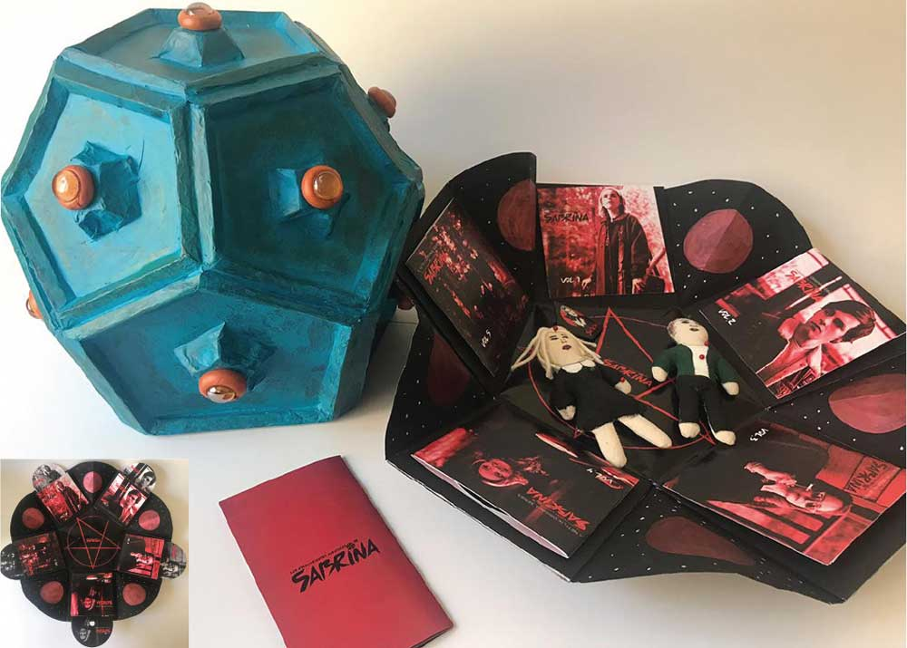Packaging como objeto de estudio, se considera a la relación interdisciplinaria uno de los fundamentos importantes del trabajo en el taller; arribando a la problemática del envase desde las distintas especialidades que se ven implicadas en su desarrollo y considerando a la comunicación como su eje conductor. Diferenciación de las distintas actividades que requieren de esta forma de traslado para la publicidad de una marca o bien como contenedores de ciertas necesidades ambientales. El alumno deberá reconocer no sólo los aspectos del comportamiento del consumidor, sino también los aspectos relacionados al medio ambiente.
Diseño Tridimensional I (STAND)
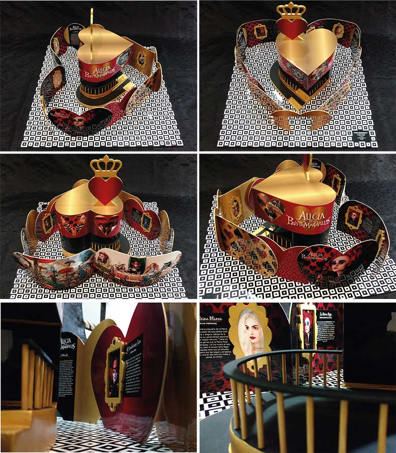Diseñar elementos gráficos tridimensionales, formas espaciales y aplicaciones gráficas para grandes superficies con el empleo de las nuevas escalas y tecnologías de impresión, entre otras cosas. Observación de las tendencias y la evolución de los estilos en el contexto cultural y social, y a comprender e interpretar las exigencias y expectativas específicas de cada comitente, sin obstaculizar la creatividad y la libertad expresiva, respetando las exigencias del usuario y la problemática técnica que conlleve.
Diseño editorial
Conocer el proceso de edición, que le permita manejar todo tipo de formatos para el diseño de páginas atractivas, distinguiendo las características del folleto, del manual, del instructivo, del catálogo, del boletín, el periódico, la revista y el libro y todos los elementos del diseño que sean aplicables a una pieza editorial.
Ética
Definición de la ética como ciencia de los actos humanos en orden al fin. Las nociones de bien, perfección, fin y felicidad. Acto humano inteligente y voluntario. El involuntario por violencia, miedo grave, pasión violenta e ignorancia. Análisis del acto humano bajo el aspecto moral: el objeto de la acción. Análisis del acto humano bajo el aspecto moral: el fin o intencionalidad de la acción. Análisis del acto humano bajo el aspecto moral: las circunstancias del acto humano como agravante o atenuante. Quien, a quién, para qué, cómo, tiempo, lugar. Principios del acto humano: los hábitos, definición y clasificación en virtudes y vicios. La ley como ordenamiento de la razón en orden al bien común promulgada por la autoridad. Ley eterna, ley natural, ley positiva o humana. La fuerza de la ley humana fundada en el derecho natural o DDHH. Análisis de casos de la carrera.
CUARTO AÑO
Total Horas Ciclo de Formación Superior: 1260
TOTAL HORAS DE LA CARRERA: 2646
TÍTULO: LICENCIADO EN DISEÑO GRÁFICO
Contenidos mínimos de las asignaturas:
Taller de Diseño Gráfico IV
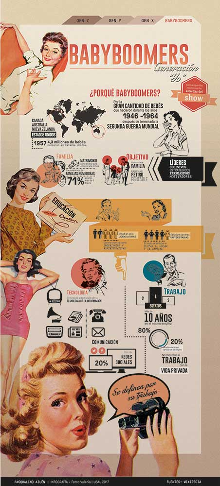Diseño Persuasivo. Serie de afiches, campaña para vía pública. TV., Story board, animaciones. Radio: jingle. Diseño editorial. Serie de diseño de pack. Marca y signo. Editorial (brochure). Diseño corporativo. Stand. Merchandasing. Corto animado.
Infografía
"Las infografías son una combinación de palabras y elementos visuales que explican los acontecimientos descritos en el artículo y sitúan a la historia o a sus protagonistas en un contexto determinado" Peggie Stark. Una infografía contiene, de manera ética, la información que se quiere comunicar (desde proporciones, formas, colores, orden de eventos, etc.) ya que el lector de la misma necesita que lo que está en el papel (o en el monitor) sea lo más preciso y verdadero posible. Ya que mucha de esta información le es de utilidad y tiene repercusiones en su vida diaria.
Diseño tridimensional II
Información necesaria para adquirir las competencias teóricas y prácticas para la creación efectiva de sistemas de señalización y señalética, sistemas en los que el impacto visual incide de manera preponderante. En este taller se busca integrar y sintetizar los conocimientos de metodología, color, semiótica, tipografía, pre-prensa, sistemas de impresión, diseño editorial y técnicas de representación tenga el alumno, en el desarrollo de diferentes proyectos de sistemas de señalización. Conceptos como: Ergonomía, materialidad, sistemas de sujeción, aspectos legales, entre otros.
Diseño de Identidad Visual II
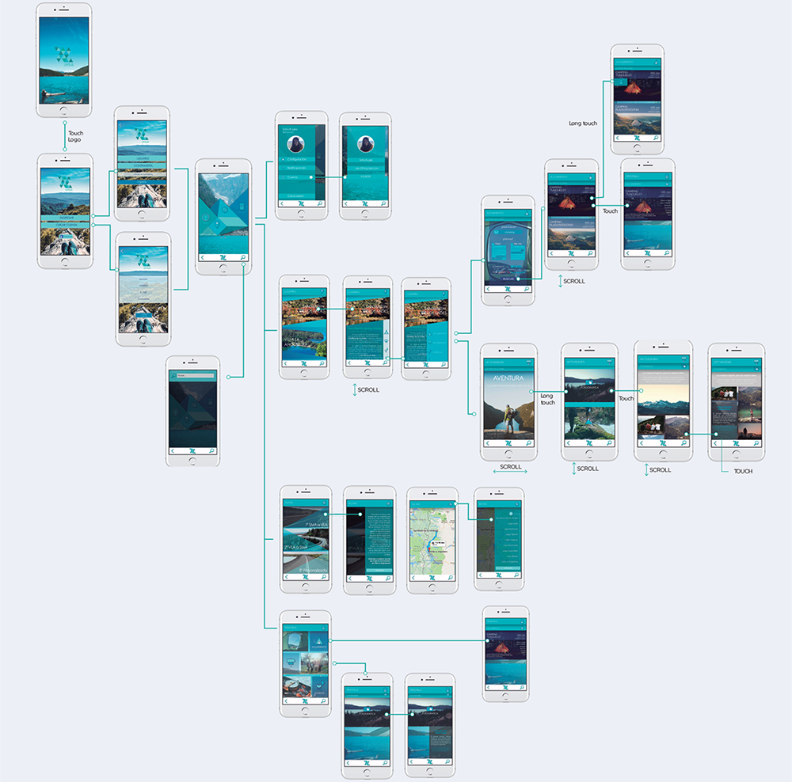Necesidad de identificación de las empresas. Identificador corporativo. Personalidad, imagen, cultura, identidad y discurso corporativo. Branding. Experiencia de usuario. El ruido y la contaminación visual hacen de la investigación y la diferenciación del producto / servicio la única forma de emerger entre los competidores y dejar una imagen pregnante en clientes reales y potenciales, obteniendo así el mayor índice de recordación.
Diseño Multimedial II (desarrollo de APP)
HTML y CSS. HTML: CSS: Estilo. Diseño para Web. CSS3. Diseño de aplicaciones. HTML5: Javascript y jQuery: contenido dinámico. Experiencia del usuario en el uso de las interfaces: web, intranet, aplicación de celular, software, etc. Transacciones en internet. Medidas de seguridad electrónica. Concepto de Web logs, Redes sociales. Herramientas de video online. Fotoblogs. Conceptos de negocio, sitios representativos y sobresalientes: funcionalidad.
Seminario de Publicidad
El vocabulario de la publicidad. El cartel: el antecesor del poster. La publicidad de respuesta directa. La radiofonía y la publicidad. La fotografía al servicio de la venta. La televisión. La ciencia de la motivación. Las grandes campañas de la historia.
Portfolio y Práctica Profesional del Diseño
La presentación del material y el análisis e interpretación del interés puesto en la creación de cada elemento, etapas. El diseño visual. Portfolio: diferentes formatos. Producción editorial. Preparación de originales. Otros canales de comunicación. Presentaciones digitales. Páginas web.
Cuando te gradúes podrás:
- Manejar las herramientas gráficas y tecnológicas de representación, que caracterizan a los artefactos gráficos y los mensajes a comunicar.
- Analizar, aplicar y diseñar toda expresión de comunicación a través de cualquier soporte gráfico o visual.
- Integrar los significantes de la forma con los componentes de la imagen, analizando los factores psicológicos, sociológicos y de organización que intervienen en el diseño de significantes y significados.
- Responder eficazmente a la constante evolución de Internet, sus nuevos espacios virtuales y sus nuevas formas de interacción entre personas.
- Formarte para la investigación en los campos de conocimiento involucrados en las artes gráficas.
- Dirigir la ejecución de los diseños y las consiguientes acciones de difusión en campañas gráficas y visuales.
- Proyectar sistemas de identidad visual, sistemas de signos y señalética, diseño editorial, diseño de envases y diseño multimedial.